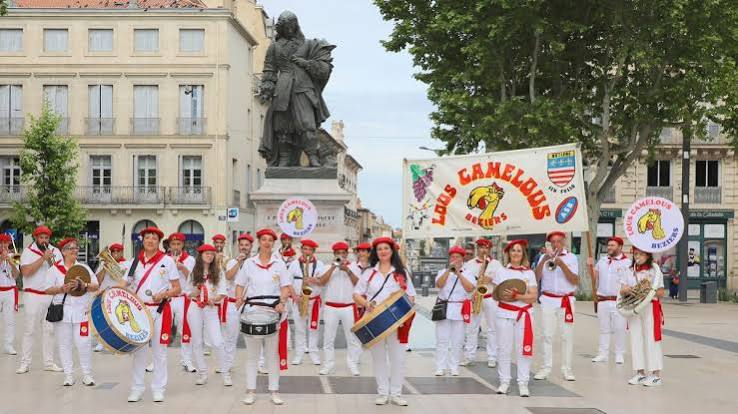

Fanfares &
bandas de BéziersCuivres, percussions et ferveur populaire


⟹ Musique ⟸
À Béziers, les fanfares, peñas et bandas appartiennent au paysage sonore des grandes fêtes populaires, au premier rang desquelles la Feria d'août. Cuivres, bois et percussions circulent dans les rues, jouent au plus près du public et transforment les allées Paul-Riquet, les places et les bodegas en espaces musicaux ouverts.
La banda telle qu'on la connaît dans le Sud de la France est nourrie d'influences ibériques et taurines, mais elle s'est profondément acclimatée au Languedoc. À Béziers, elle rencontre une forte tradition locale de fête, de rugby, de musique de rue et de sociabilité associative. Les termes peña et banda peuvent se recouvrir dans l'usage festif, même si la peña désigne souvent plus largement une association ou un groupe de supporters.

Le répertoire privilégie des morceaux immédiatement fédérateurs : paso dobles, airs taurins, chansons populaires, standards festifs, arrangements de variété et hymnes locaux. L'enjeu n'est pas le concert silencieux mais la participation : marcher, chanter, taper dans les mains et répondre aux musiciens.
Chaque mois d'août, la Feria transforme le centre de Béziers pendant plusieurs jours. Les bandas et peñas y disposent d'une visibilité officielle : défilés, animations de rue, remises d'oriflammes, concerts et rassemblements collectifs font partie de la programmation.
Les éditions récentes maintiennent ce rôle central. En 2026, le programme officiel annonce notamment un concert des peñas et bandas et la participation de la Banda Mescladis lors du pregón, aux côtés de chants emblématiques comme Se Canto, L'Encantada ou Aqui es Besièrs.
Cette présence dépasse la seule arène taurine. Elle s'étend aux boulevards, aux places, aux cafés, aux bodegas et aux parcours improvisés entre groupes. La musique devient un véritable système de circulation de la fête dans la ville.
La force des bandas biterroises tient à leur capacité à mélanger les appartenances : culture taurine, mémoire viticole, identité occitane, rugby et sociabilité de quartier. Le même air peut accompagner une procession festive, un rassemblement sportif ou une soirée de feria.
Le public n'est jamais totalement extérieur au spectacle. Il reprend les refrains, forme des cortèges, danse ou suit les musiciens. Cette porosité entre scène et rue rapproche les bandas des traditions de musique communautaire où la fonction sociale compte autant que la virtuosité.
À Béziers, le répertoire contemporain côtoie ainsi des marqueurs régionaux. La présence régulière de Se Canto et d'autres chants identitaires rappelle que la banda n'est pas seulement une importation festive : elle s'est intégrée à un imaginaire languedocien propre.
Les formations se transmettent par la pratique collective : répétitions associatives, apprentissage instrumental, défilés, rencontres entre groupes et participation aux fêtes locales. La banda constitue souvent une porte d'entrée très concrète vers la musique d'ensemble pour des amateurs de générations différentes.
Les concours et journées dédiées aux peñas et bandas renforcent cette émulation. La programmation officielle de la Feria de Béziers a déjà consacré des journées entières à leur présentation, leurs défilés, leurs concours et leurs grands concerts.
Cette tradition reste particulièrement vivante parce qu'elle accepte l'évolution. Les arrangements changent, de nouveaux titres entrent au répertoire et les effectifs varient, mais demeurent l'énergie acoustique, la mobilité dans la rue et le rapport direct avec la foule.
À Béziers, la banda est moins un genre fermé qu'une manière de faire de la musique ensemble, au milieu de la fête.
— Synthèse patrimonialeLa documentation sur les bandas biterroises est surtout dispersée dans les programmes municipaux, les archives de la Feria et la presse locale. Ces sources sont néanmoins précieuses : elles permettent de suivre, année après année, la place donnée aux peñas et bandas dans les défilés, les concerts, les cérémonies et les concours.
Le Journal de Béziers consacré à la Feria 2018 présente par exemple la musique comme omniprésente dans la fête et consacre une journée aux peñas et bandas : présentation des groupes, remise des oriflammes, défilés, concert et interprétation collective d’un hymne de Feria. Les programmes 2025 et 2026 confirment la continuité de ces dispositifs, avec concours sur les allées Paul-Riquet, pregón, concerts collectifs et présence quotidienne de formations ambulantes dans le centre-ville.
Ces programmes constituent une forme d’archive du patrimoine festif contemporain. Ils permettent aussi d’identifier des ensembles régulièrement présents à Béziers — Banda Mescladis, Peña Lous Camelous, Peña du Languedoc, Peña La Bienvenida, Peña Colada, Banda Suzanne ou La Bande à Béziers — sans pour autant supposer que toutes ces formations soient exclusivement biterroises.
Piste documentaire : pour approfondir l’histoire sur le temps long, les collections de la presse régionale, les fonds municipaux et les programmes successifs de la Feria sont à privilégier. Ils peuvent documenter l’évolution des répertoires, des parcours urbains et des formations invitées.